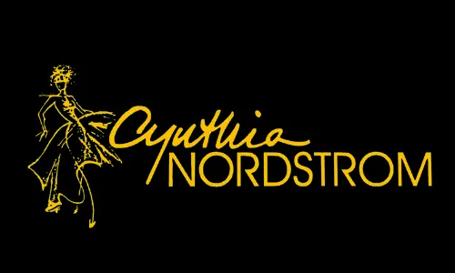
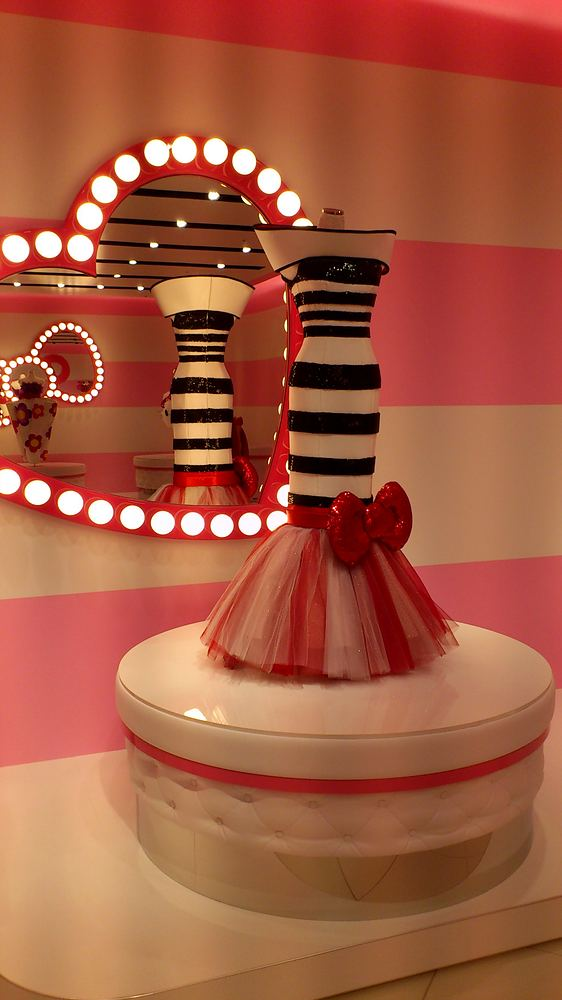
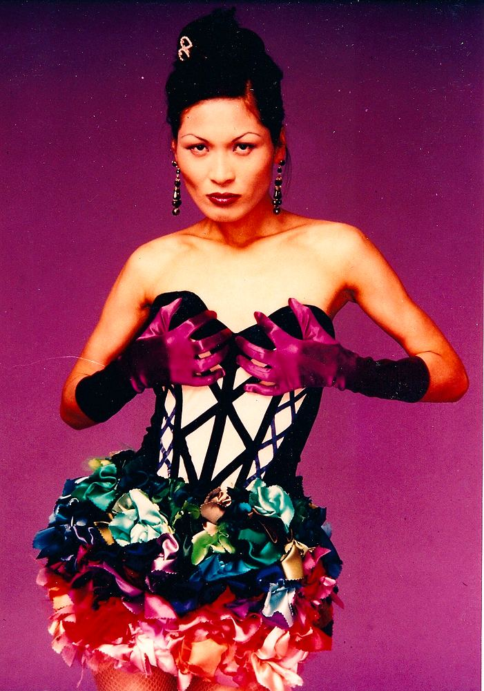
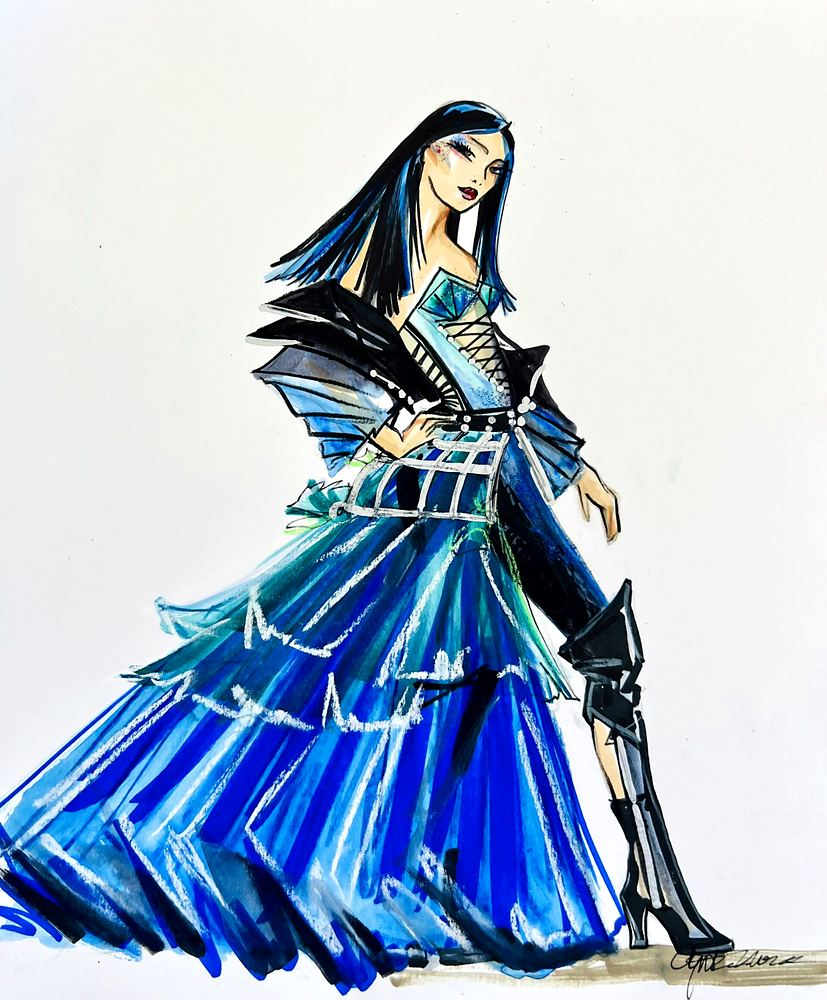

Skip to content

Cynthia Nordstrom
Costume Design
Menu
Plays & Musicals
Tours
Family / Theme Park
Fashion & Art
Film & Television
Biography
Home
Fashion & Art

Hello Kitty’s Wonderland – USJ
Interior Art Design / Dresses & Costumes

Fashion & Art

Concept Art